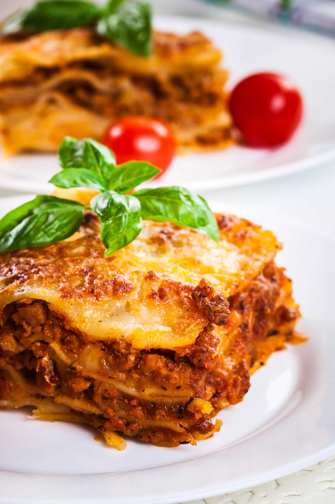

bolognaise lasagna

ingredienten
- 1 pakket van lasagna
- 3 gele uien
- 2 teentjes knoflook
- 1 stengel bleekselderij
- 1 wortel
- 800 g tomatenpuree
- 15 cl water
- 20 cl rode wijn
- 2 laurierblaadjes
- tijm
- basilicum
- 3 snufjes muskanootjes
- 70 g geraspte kaas
- 125 g parmesan kaas
- zout
- peper
- 100 g bloem
- 125 g boter
- 1 l melk
- 600 g gehakte rundervlees
bereiding
- Fruit de gesnipperde teentjes knoflook en de gesnipperde uien in een beetje olijfolie.
- Voeg de wortel en de gesneden bleekselderij toe, dan het vlees en bak alles bruin.
- Voeg na enkele minuten de rode wijn toe. Laat koken tot het verdampt.
- Voeg de tomatenpuree, het water en de kruiden toe. Kruid met peper en zout en laat 45 minuten op laag vuur.
- Bereid de bechamel: smelt 100 g boter.
- Voeg van het vuur de bloem in één keer toe.
- Zet terug op het vuur en roer met een garde tot een gladde massa.
- Voeg beetje bij beetje de melk toe.
- Roer constant, totdat het mengsel dikker wordt.
- Breng vervolgens op smaak met nootmuskaat, zout, peper. Kook ongeveer 5 minuten op zeer laag vuur, al roerend. Reserveren.
- Verwarm de oven voor op 200°C (thermostaat 6-7). Vet de lasagneschaal in. Leg een dun laagje bechamel en vervolgens lasagnebladen, bolognese, bechamel en Parmezaanse kaas. Herhaal de handeling 3 keer achter elkaar.
- Leg op de laatste laag lasagne alleen bechamel en bedek met geraspte kaas. Strooi er een paar klontjes boter over.
- Bak ongeveer 25 minuten koken.
- het gerecht is klaar.